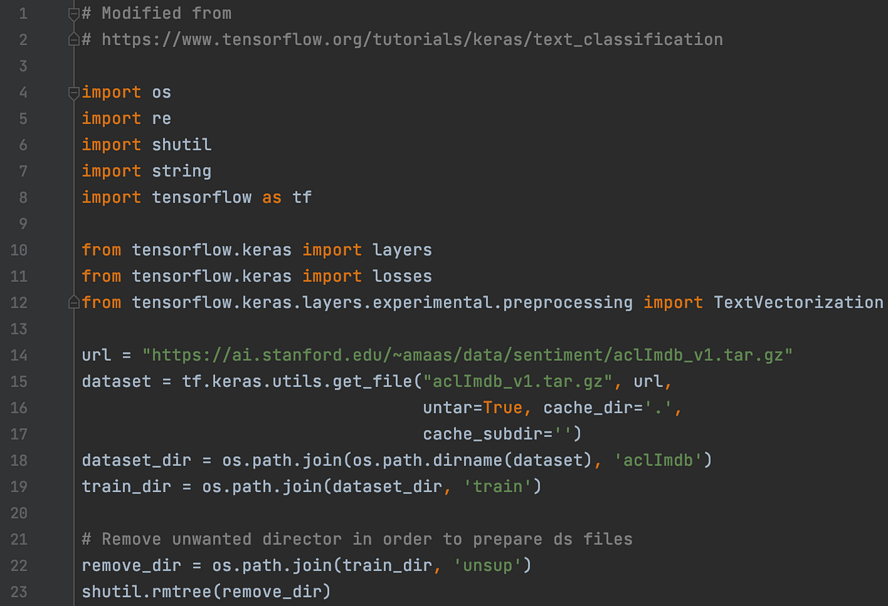
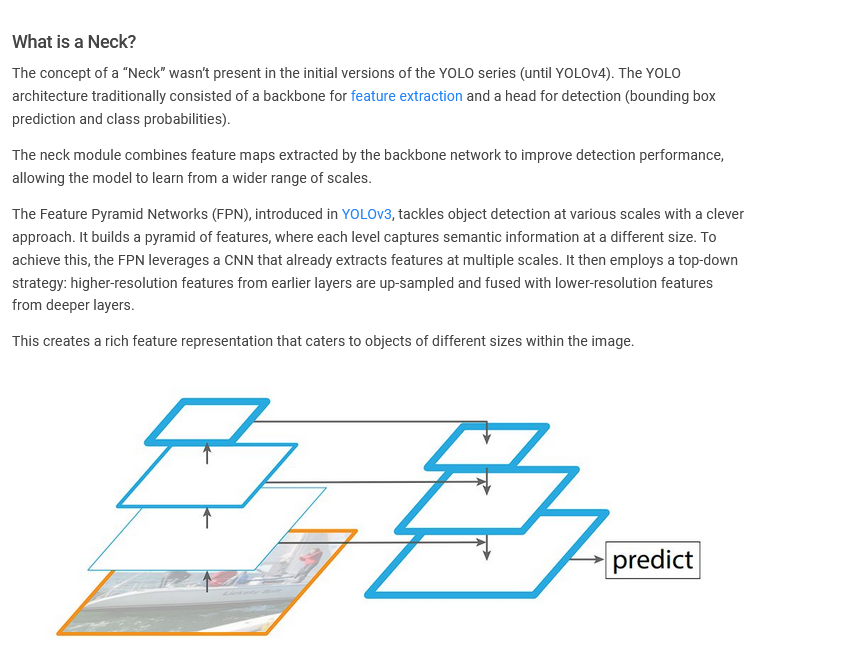
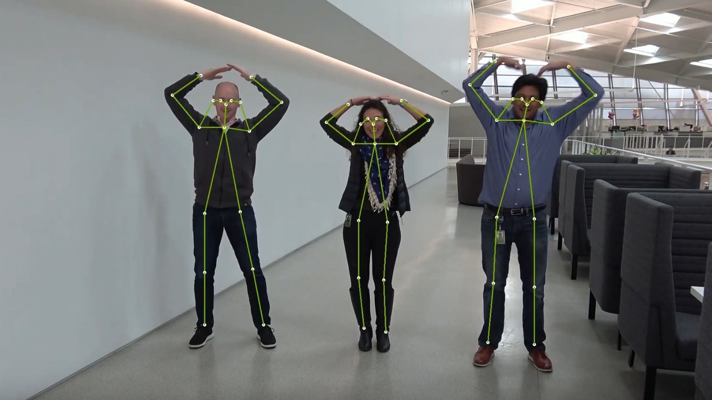

My Projects
1. Text Generation
Designed a text generation model using LSTM to produce Shakespearean-style poetry.
2. Technical Writing
Worked with a Switzerland based Computer Vision company to write id-depth technical blogs realted to Deep Learning, ML and CV.
3. Object Detection

Developed a real-time object detection and classification model using YOLO, achieving a 92% accuracy rate in object identification. Automated attendance system to track employee arrivals and departures
4. Pose Estimation
Applied the DeepLab model in TensorFlow for 3D human pose estimation, achieving a 90% accuracy in body position analysis, and enhancing precision for applications requiring detailed pose tracking.
5. Fine-Tuned LLMs

Fine-tuned a language model using Retrieval-Augmented Generation (RAG), LangChain, and vector databases, resulting in increased contextual understanding and relevance for the LLMs, the dataset given was a book